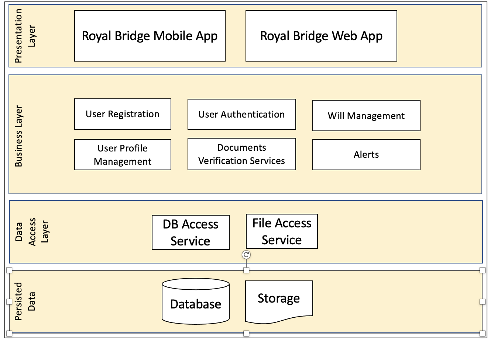

1. High Level Component
{kind=link}
1.1. Presentation Layer
Architecture is detailed in later section.
Design Consideration
Common UI elements would be used to give consistent feel to the users.
Users will be informed of location, actions, changes in state, or errors.
Informational Components would be used to ensure that users are able to navigate through the application with zero guidance.
Layout will be designed with Input and visual elements: images, buttons, text fields, checkboxes, radio buttons, dropdown lists, list boxes, toggles, date field as appropriate for providing the best user experience.
All data entry fields will have validations along with appropriate error messages for user to correct and capture.
Mandatory fields will be marked with “*”.
Field level validation and error messaging will be done to provide better user experience along with page level validation during submission.
Length restrictions will be put in place where applicable.
Exception handling will be performed with appropriate error messaging or alternate path for the user to resolve the issue. There will be a JSON file with all the error message and code which will be synchronized between frontend and backend.
1.2. Business Layer
User Registration: The registration and subscription steps for new users.
User Authentication: User login with 2 factor authentication to make the platform more secure.
Will Management: Creating a will with all assets and distribute to beneficiaries. Manage witnesses. View others’ wills as a Beneficiary or take actions as a witness.
Document verification services: The authorized documents verification processes to verify aadhaar, pan etc.
Alerts: Alerts services to notify users with news and updates. Some alerts can be sent via emails/sms/push notifications
User Profile Management: Manage profile, update details. Upgrade/downgrade/cancel subscriptions etc.
Architecture is detailed in later section.
1.3. Data Access Layer
TBD (Need Backend help here)
1.4. Persisted Data
TBD (Need Backend help here)